무선설비산업기사 (2008-05-11 기출문제)
1과목: 디지털 전자회로
1. 수정진도자의 지지기(holder)가 갖추어야 할 조건으로 적합하지 않는 것은?
- 진동 에너지에 손실을 주지 않을 것
- 지지기 및 전극과 수정면 사이의 상대위치 변화가 원활할 것
- 외부로부터 기계적 진동이나 충격에 의해서 발진에 지장이 생기지 않을 것
- 온도 및 습도의 영향을 받지 않는 구조일 것
(정답률: 68%)

2. 다음 중 RC 발진기의 설명으로 옳은 것은?
- 부성저항 특성을 이용한 발진기이다.
- R 및 C로써 정궤환에 의한 발진기이다.
- 압전효과에 의한 발진기이다.
- 부궤환에 의한 비정현파 발진기이다.
(정답률: 97%)
3. 다음 그림의 다이오드 회로와 등가인 논리 게이트는?
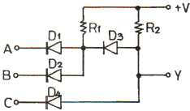
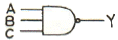
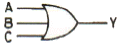
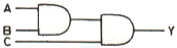
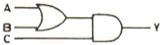
(정답률: 69%)
4. 권선비 (
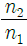
)가 3인 전원 변압기를 통하여 실효치 200[V]의 교류입력이 전파 정류되면 평균치는 몇 [V]인가?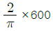
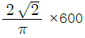
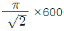
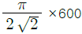
(정답률: 70%)
5. 저항 부하에서 A급 전력 증폭기의 최대 효율은?
- 20[%]
- 25[%]
- 40[%]
- 60[%]
(정답률: 83%)
6. 다음 그림과 같은 연산회로의 명칭은?
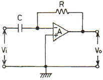
- 이상기
- 미분기
- 적분기
- 감산기
(정답률: 93%)
7. 다음 회로의 게이트는? (단, A, B는 입력이고 Y는 출력)
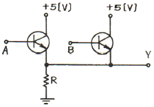
- AND
- OR
- NAND
- NOR
(정답률: 79%)
8. 반송파 υc=Vcsinωct를 υm=Vmsinpt로 진폭변조했을 때 피변조파 υ(t)는?
- υ(t)=(Vc+Vm)sinpt
- υ(t)=(Vc+Vmsinpt)sinωct
- υ(t)=(Vc+Vm)sinωt
- υ(t)=(Vcsinωct+Vm)sinpt
(정답률: 77%)
9. 다음 카르노도의 논리함수를 간략화할 때 옳은 것은?
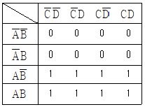
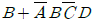
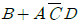
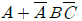
- A
(정답률: 87%)
10. 그림과 같은 증폭회로의 전압이득(Vo/Vi)은 약 얼마인가? (단, gm=10m℧,Γd =100kΩ)
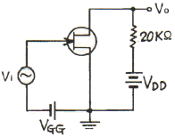
- -124
- -155
- -167
- -349
(정답률: 80%)
11. 그림의 회로에서 스위치 A가 1의 위치에 있을 때, 콘덴서 C 양단의 전압이 V로 충전되었고 이 때의 전류는 0 이다. 만일 t=0 에서 스위치 A를 위치 2로 전환한다면 t＞0에서 전류 i(t)는?
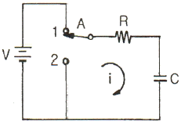
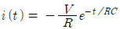
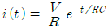
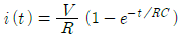
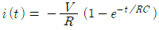
(정답률: 68%)
12. 다음 중 외부로부터 트리거(trigger) 신호 없이 스스로 준안정 상태에서 다른 준안정 상태로 변화를 되풀이 하는 것은?
- 비안정 멀티바이브레이터
- 쌍안정 멀티바이브레이터
- 단안정 멀티바이브레이터
- 시미트 트리거
(정답률: 76%)
13. EX-OR 게이트(2입력 1출력)를 사용하여 8비트 패리티 검사를 할 때 최소로 필요한 EX-OR 게이트의 수는?
- 9개
- 8개
- 7개
- 6개
(정답률: 70%)
14. 그림과 같은 회로에서 V1=V2=20[V]이면 VO[V]는? (단, 다이오드는 이상적이다.)
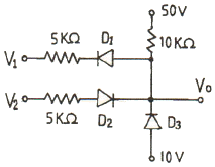
- 50
- 40
- 30
- 20
(정답률: 68%)
15. 다음 회로에서 출력 파형으로 가장 적합한 것은) ?단, 펄스의 폭 τ ≫ RC 이다.)
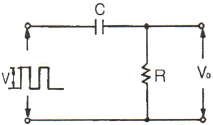
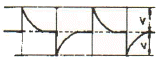
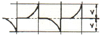
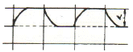
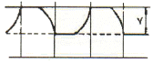
(정답률: 85%)
16. 이미터접지 트랜지스터에서 VCE를 일정하게 하고 IB를 20[μA], 50[μA]로 했을 때 IC가 각각 5[mA], 9.5[mA]였다면 전류증폭율 hfe 는?
- 130
- 140
- 150
- 160
(정답률: 72%)
17. 그림과 같은 이상적인 연산 증폭기에서 출력전압은? (단, 입력전압 : ei , 출력전압 : eo )
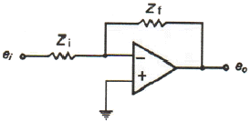
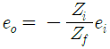
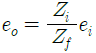
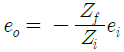
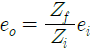
(정답률: 84%)
18. 다음 중 불 함수 (A+B)(A+C)와 같은 것은?
- A+BC
- B+C
- A+B+C
- A+B
(정답률: 92%)
19. 진폭변조에서 반송파전력(Pc)과 피변조파전력(P)의 관계가 옳은 것은? (단, 변조도 m=1 이다.)
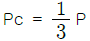
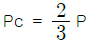
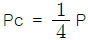
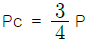
(정답률: 70%)
20. 그림과 같은 이상적인 연산 증폭회로의 증폭도 (Vo/Vi)는? (단, R1=2kΩ, R2=15kΩ, R3=10kΩ 이다.)
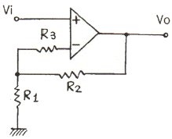
- 2.5
- 7.5
- 8.5
- 12.5
(정답률: 62%)
2과목: 무선통신 기기
21. 다음 중 직류전압을 교류전압으로 변환하는 장치는?
- AVR
- UPS
- 인버터
- 변압기
(정답률: 93%)
22. GPS 위성의 고도는 약 몇 [km] 인가?
- 1000[km]
- 10000[km]
- 20200[km]
- 35800[km]
(정답률: 98%)
23. 무선송신기에 수정진동자를 사용하는 이유로 가장 타당한 것은?
- 발진주파수가 안정하기 때문이다.
- 고조파를 쉽게 얻을 수 있기 때문이다.
- 일그러짐이 적은 파형을 얻기 위해서이다.
- 발진주파수를 쉽게 변경할 수 있기 때문이다.
(정답률: 83%)
24. 다음 중 AM 수신기의 감도측정에 필요치 않은 것은?
- 가변 감쇠기
- 저주파 발진기
- 의사 공중선
- 표준신호 발생기
(정답률: 64%)
25. 다음 중 수신기의 감도에 영향이 가장 적은 것은?
- 음성주파수의 왜율
- 고주파 증폭부의 잡음
- IF 증폭기의 이득
- 주파수 변환부의 잡음
(정답률: 75%)
26. 진폭이 12[V]이고 주파수가 1[MHz]인 반송파를 진폭이 10[V], 주파수 3[kHz]의 변조파로 진폭 변조하였을 때 변조도는 약 몇 [%] 인가?
- 50[%]
- 75[%]
- 83[%]
- 92[%]
(정답률: 68%)
27. 어떤 증폭기의 출력에 기본파 전압이 10[V], 제2고조파 전압이 0.2[V], 제3 고조파의 전압이 0.1[V]로 나타났을 때 왜율은 약 몇 [%] 인가?
- 1.3[%]
- 2.2[%]
- 3.5[%]
- 9.5[%]
(정답률: 57%)
28. 수신기 시험에 의사 공중선을 사용하는 이유 중 가장 타당한 것은?
- 수신기의 감도가 좋아지기 때문에
- 표준 입력 신호를 공급하기 위하여
- 수신기의 입력 레벨을 감쇠시키기 위하여
- 공중선에 의한 입력회로와 등가회로를 구성하기 위하여
(정답률: 82%)
29. 다음 중 위성통신에서 회선의 다원접속방법이 아닌것은?
- SDMA
- CDMA
- WDMA
- FDMA
(정답률: 76%)
30. 지구국의안테나를 위성방향으로 향하도록 하는 제어장치를 무엇이라 하는가?
- TWTA
- 추미장치
- Transponder
- 자세제어장치
(정답률: 67%)
31. 다음 중 AM, FM 수신기에서 다같이 사용되는 것은?
- 리미터
- 주파수 변별기
- 스퀄치 회로
- 국부 발진기
(정답률: 70%)
32. 이동전화시스템에 사용되는 CDMA 방식의 특성에 대한 설명으로 적합하지 않은 것은?
- 비화특성이 우수하다.
- 채널용량은 간섭량에 의해서 결정된다.
- 페이딩과 시간지연에 대해서 약하다.
- 매우 정교한 전력제어시스템이 필요하다.
(정답률: 84%)
33. 무선통신에서 이용하는 다이버시티 방법이 아닌 것은?
- 슬로
- 시간
- 공간
- 주파수
(정답률: 87%)
34. 다음 중 스펙트럼 분석기의 구성 요소가 아닌 것은?
- CRT
- IF 증폭회로
- 주파수 변조기
- 톱니파 발진회로
(정답률: 48%)
35. 직렬형 정전압회로에서 직류 출력의 전압 변동을 감지하는 부분은?
- 증폭부
- 제어부
- 검출부
- 기준 제어부
(정답률: 73%)
36. 다음 중 진폭변조 방식에 해당되는 것은?
- PWM
- PSK
- QAM
- VSB
(정답률: 53%)
37. Fm 송신기에서 최대 주파수편이가 규정치를 넘지 않도록 음성신호 등의 진폭을 일정하게 제한하는 회로는?
- AFC 회로
- IDC 회로
- Squelch 회로
- Limiter 회로
(정답률: 85%)
38. 레이더에서 사용하는 전파의 펄스폭이 6[μs]일 때, 탐지할 수 있는 최소 탐지거리는 약 몇 [m] 인가?
- 300[m]
- 450[m]
- 500[m]
- 900[m]
(정답률: 48%)
39. 비 검파기에 대한 설명 중 적합하지 않은 것은?
- 대용량의 콘덴서를 사용한다.
- 출력은 Foster-Seeley의 2배이다.
- 순시편이 주파수와 출력전압과의 관계는 S자 특성을 갖는다.
- 진폭제한 작용을 갖기 때문에 앞단의 리미터를 단순화 할 수 있다.
(정답률: 68%)
40. 다음 중 송신기의 스퓨리어스 발사를 줄이는 방법으로 적합하지 않은 것은?
- 전력 증폭기의 동작각을 크게 한다.
- 출력결합회로의 Q를 높인다.
- 저조파에 대한 트랩(Trap) 회로를 삽입한다.
- 송신기와 급전선 사이에 HPF를 삽입하여 고조파를 제거한다.
(정답률: 65%)
3과목: 안테나 개론
41. 마이크로스트립 안테나의 특성에 대한 설명으로 가장 적합하지 않은 것은?
- 방사전력이 작음
- 대역폭이 넓음
- 능동소자와의 집적이 용이함
- 임의의 형태로 제작 가능
(정답률: 65%)
42. 매질의 비유전율이 4, 비투자율이 1 일 때 전파의 전파속도는 얼마인가?
- 1.5×108[m/s]
- 2.0×108[m/s]
- 2.5×108[m/s]
- 3.0×108[m/s]
(정답률: 70%)
43. 다음 중 방향탐지용 안테나로 적합하지 않은 것은?
- Wave 안테나
- 루프 안테나
- Adcock 안테나
- Bellini-Tosi 안테나
(정답률: 56%)
44. 마이크로파에서 사용되는 도파관의 특성에 대한 설명 중 적합하지 않은 것은?
- 저항손실이 적다.
- 복사손실이 거의 없다.
- 유전체 손실이 적다.
- 저역 여파기(LPF)로서 작용한다.
(정답률: 72%)
45. 다음 중 도파관 또는 자유공간에 존재하지 않는 전파 모드는?
- TE 모드
- TH 모드
- TM 모드
- TEM 모드
(정답률: 95%)
46. 미소 다이폴 복사에서 유도전자계와 복사전자계의 크기가 같아지는 지점은?
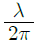
- 0.1πλ
- 0.2πλ
- 120λ
(정답률: 66%)
47. 복사저하이 36[Ω], 손실저항이 6[Ω], 도체저항이 3[Ω]인 안테나의 효율은 몇 [%] 인가?
- 50[%]
- 75[%]
- 80[%]
- 85[%]
(정답률: 54%)
48. 다수의 반파장 다이폴 안테나를 동일 평면상에 규칙적인 종횡으로 배열하고, 각 소자에 동일 진폭, 동일 위상의 전류를 급전하면 배열면과 수직 방향으로 예민한 지향성을 갖는 안테나는?
- 루프(Loop) 안테나
- 비임(Beam) 안테나
- 롬빅(Rhombic) 안테나
- 애드콕(Adcock) 안테나
(정답률: 60%)
49. 다음 중 선박용 레이더 안테나로 많이 사용되는 것은?
- 루프 안테나
- Slot array 안테나
- 카세그레인 안테나
- Horn reflector 안테나
(정답률: 75%)
50. 주파수 4[MHz], 전계강도 10[mV/m]인 전파를 반파장 다이폴 안테나로 수신했을 때, 안테나에 유기되는 전압은 약 몇 [mV] 인가?
- 214[mV]
- 225[mV]
- 239[mV]
- 248[mV]
(정답률: 59%)
51. 다음 중 전파예보에서 알 수 없는 것은?
- MUF(최고사용 주파수)
- 전파잡음의 발생 시간대
- LUF(최저사용 주파수)
- 통신할 수 있는 주파수
(정답률: 94%)
52. 단파대에서 마이크로파대까지 사용되며 초단파대에서 주로 사용되는 안테나는?
- 어골형 안테나
- 야기 안테나
- Whip 안테나
- 대수주기 안테나
(정답률: 58%)
53. 다음 중 폴디드 다이폴 안테나의 특징에 대한 설명으로 가장 적합한 것은?
- 이득은 반파장 다이폴의 2배이다.
- 급전점 임피던스는 약 300[Ω]이다.
- 실효길이는 반파장 다이폴의 약 4배이다.
- Q가 높아 반파장 다이폴에 비하여 광대역성을 갖는다.
(정답률: 59%)
54. 자기람에 관한 설명으로 적합하지 않은 것은?
- 1~2일 때로는 수일 계속된다.
- 20[MHz] 이상의 높은 주파수대에 영향이 심하다.
- 태양폭발이 생기는 동시에 나타난다.
- 지구 자계의 영향을 받아, 고위도 지방에서 자기람이 더 심하게 나타난다.
(정답률: 66%)
55. 특성임피던스가 50[Ω]인 급전선에 75+j0[Ω]의 부하를 연결할 때 전재파비는 얼마인가?
- 0.2
- 1.2
- 1.5
- 2.0
(정답률: 69%)
56. 초단파가 가시거리를 넘어서 이례적으로 멀리 전파하는 경우가 있는데 그 원인으로 적합하지 않은 것은?
- 대류권 산란에 의한 전파
- 산악회절파에 의한 전파
- F층의 반사에 의한 전파
- 초굴절 또는 라디오 덕트에 의한 전파
(정답률: 60%)
57. 단파가 전리층을 통과하거나 반사될 때 전자나 공기분자와 충돌로 인하여 감쇠량이 변하여 발생하는 페이딩은?(오류 신고가 접수된 문제입니다. 반드시 정답과 해설을 확인하시기 바랍니다.)
- 간섭성 페이딩
- 편파성 페이딩
- 흡수성 페이딩
- 선택성 페이딩
(정답률: 78%)
58. 다음 중 전파의 창의 범위를 결정하는 요소로 적합하지 않은 것은?
- 위성의 영향
- 전리층의 영향
- 대류권의 영향
- 정보전송량의 문제
(정답률: 49%)
59. A, B en 안테나에 같은 전력을 공급했을 때, 최대 복사 방향의 동일지점의 전계강도가 각각 8[mV/m], 2[mV/m]이었다면 A 안테나의 상대이득은 얼마인가) ?단, B 안테나는 반파장 다이폴 안테나이다.)
- 0.25
- 0.8
- 4
- 16
(정답률: 47%)
60. 야기 안테나에 대한 설명 중 틀린 것은?
- 용도는 TV 수신용 및 고정 통신용 등이다.
- 도파기 수를 증가시키면 이득이 커진다.
- 도선의 길이는 반사기, 투사기, 도파기 순으로 짧아 진다.
- 도파기는 유도성분을 가지며, 전파를 유도한다.
(정답률: 72%)
4과목: 전자계산기 일반 및 무선설비기준
61. 중앙처리장치로부터 발생되는 기억장치의 읽기 신호와 쓰기 신호를 이용하여 입ㆍ출력장치에 대한 읽기와 쓰기를 수행할 수 있는 방식은?
- Interrupt I/O
- Channel I/O
- Programmed I/O
- Memory Mapped I/O
(정답률: 67%)
62. 다음 중 인터럽트와 관련이 없는 것은?
- DMA
- 데이지체인
- 폴링
- 스택
(정답률: 57%)
63. 페이지 대체 알고리즘 중에서 최근에 다룬 어떤 페이지보다도 적게 사용된 페이지를 고르는 방법은?
- LRU 방법
- MFU 방법
- Second chance 방법
- Tuple-coupling 방법
(정답률: 77%)
64. 인터럽트 취급 루틴을 수행하기 전에 반드시 보존해야하는 레지스터는 무엇인가?
- PC(Program Counter)
- AC(Accumulator)
- MBR(Memory Buffer Register)
- MAR(Memory Address Register)
(정답률: 75%)
65. 컴퓨터에서 계산속도가 빠른 순서로부터 나열된 것은?
- ps - ns - μs - ms
- μs - ps - ns - ms
- ns - μs - ms - ps
- ms - ns - μs - ps
(정답률: 87%)
66. 다음 중 보조기억장치의 특징 아닌 것은?
- 대용량 정보를 장기보존하기가 편리하다.
- 기억용량을 주기억장치보다 크게 할 수 있다.
- 가격이 주기억장치보다 저렴하다.
- 주기억장치보다 정보를 읽는 속도가 빠르다.
(정답률: 75%)
67. 다음 중 에러의 발견과 교정까지 가능한 코드는?
- 2-out-of-5 코드
- 511111 코드
- excess-3 코드
- 해밍(Hamming) 코드
(정답률: 89%)
68. 여러 개의 노드들 가운데 가장 큰 키 값을 가지는 노드나 가장 작은 값을 가지는 노드를 빠른 시간 내에 찾아내도록 만들어진 것은?
- Queue
- Stack
- Heap
- Linked list
(정답률: 65%)
69. 다음 중 프로그램 언어의 조건으로 맞지 않는 것은?
- 다양한 응용 문제를 해결 할 수 있어야 한다.
- 명령문이 통일성 있고 단순, 명료해야 한다.
- 가능한 외부적인 지원은 차단하고, 많은 내부적인 지원이 가능해야 한다.
- 언어의 확장성이 좋으며 구조가 간단하고 분명해야 한다.
(정답률: 98%)
70. 일부분의 비트 또는 문자를 지울 때 사용하는 연산은?
- MOVE
- AND
- OR
- COMPLEMENT
(정답률: 82%)
71. 전파의 효율적 이용을 촉진하고 혼신의 신속한 제거 등 전파이용질서의 유지 및 보호를 위하여 수행하여야 하는 전파감시 업무에 속하지 않는 것은?
- 혼신으 일으키는 전파의 탐지
- 전파환경의 보호를 위한 측정
- 허가받지 아니한 무선국에서 발사한 전파의 탐지
- 무선국에서 사용하고 있는 주파수의 편차ㆍ대역폭 등 전파의 품질측정
(정답률: 52%)
72. 다음 중 전파법의 목적에 해당하지 않는 것은?
- 공공복리의 증진에 이바지
- 전파의 진흥을 위한 기술전수
- 전파이용 및 전파에 관한 기술개발을 촉진
- 전파의 효율적인 이용에 관한 사항을 정함
(정답률: 70%)
73. 새로운 전파이용기술의 실용화 및 보급을 촉진하고 전파 자원의 효율적인 이용과 전파산업의 발전기반 조성에 관한 사업 및 전파이용기술의 표준화에 관한 사업 등을 효율적으로 수행하기 위하여 설립한 것은?
- 전파연구소
- 한국전파진흥원
- 방송통신위원회
- 한국전파진흥협회
(정답률: 59%)
74. “송신장치에서 발생하는 고주파 에너지를 공간에 복사하는 설비”로 정의되는 것은?
- 송신설비
- 무선송신장치
- 송신공중선계
- 송신공중선장치
(정답률: 49%)
75. “전파를 이용하여 모든 종류의 기호ㆍ신호ㆍ문언ㆍ영상ㆍ음향 등의 정보를 보내거나 받는 것”으로 정의되는 것은?
- 무선통신
- 무선방송
- 전파통신
- 무선정보통신
(정답률: 83%)
76. 다음 중 무선국을 개설할 수 있는 자는?
- 외국의 법인
- 대한민국 국적을 가지지 아니한 자
- 「군형법」중 이적의 죄를 범하여 실형의 선고를 받고 집행 중에 있는 자
- 전파법에 규정한 죄를 범하여 금고 이상의 실형을 선고받고 그 집행이 종료된 후 2년이 경과한 자
(정답률: 89%)
77. 다음 ( ) 안에 들어갈 내용으로 가장 적합한 것은?
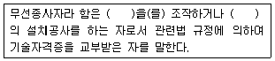
- 무선국
- 송신장치
- 무선설비
- 송신설비
(정답률: 86%)
78. 다음 중 전파진흥기본계획에 포함되어야 하는 사항이 아닌 것은?
- 전파이용질서의 확립
- 새로운 전파자원의 개발
- 전파산업 육성의 기본 방향
- 전파 이용기술의 산업화와 지원
(정답률: 57%)
79. 다음 ( ) 안에 들어갈 내용으로 가장 적합한 것은?(관련 규정 개정전 문제로 여기서는 기존 정답인 3번을 누르면 정답 처리됩니다. 자세한 내용은 해설을 참고하세요.)
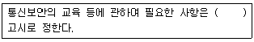
- 전파연구소장
- 지식경제부장관
- 방송통신위원회
- 한국전파진흥원장
(정답률: 58%)
80. 다음 중 방송통신위원회가 주파수재배치를 하려는 때에 관보, 인터넷 홈페이지 또는 일간신문 등을 통하여 공고하여야 하는 사항이 아닌 것은?
- 주파수재배치의 목적
- 주파수재배치의 대상
- 주파수재배치의 사유
- 손실보상금의 산정기준
(정답률: 82%)